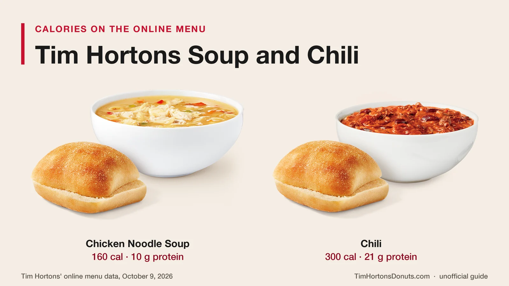
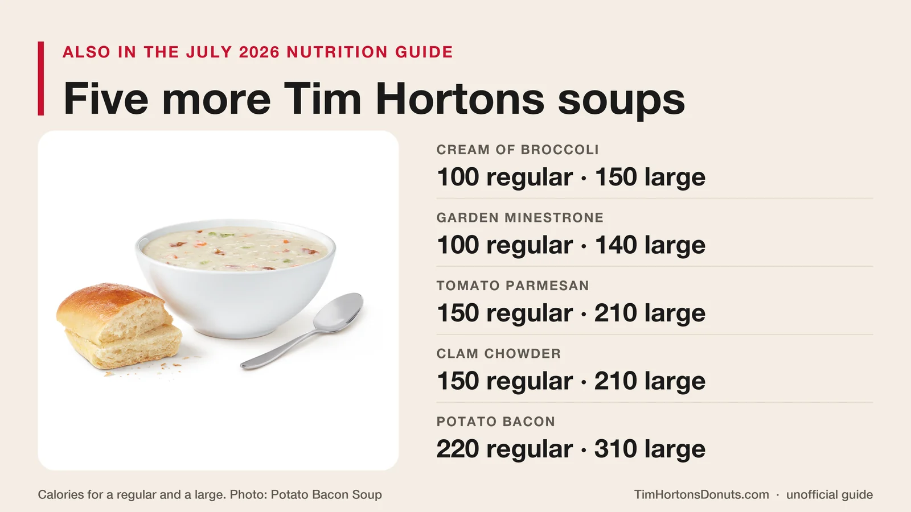
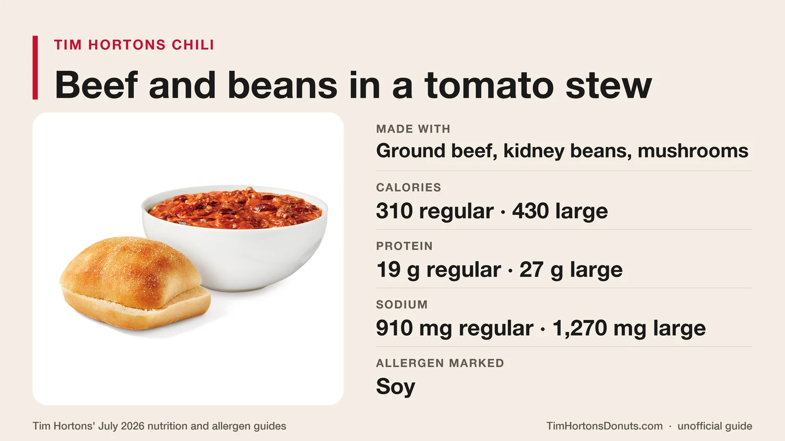
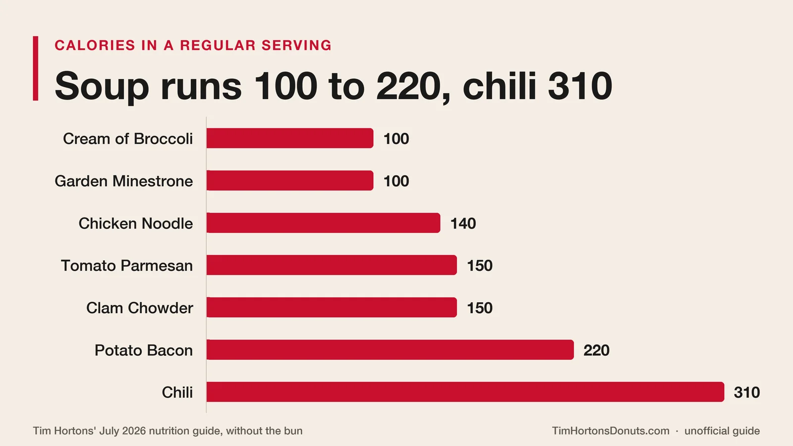
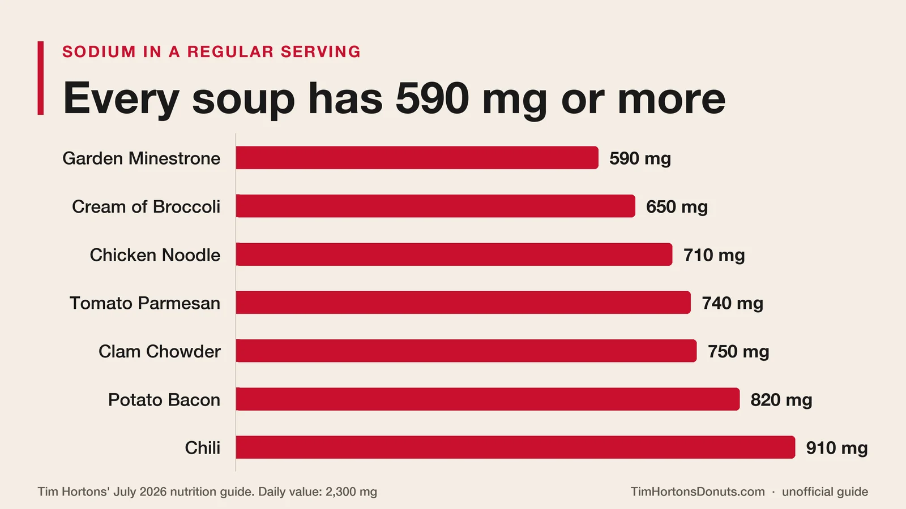
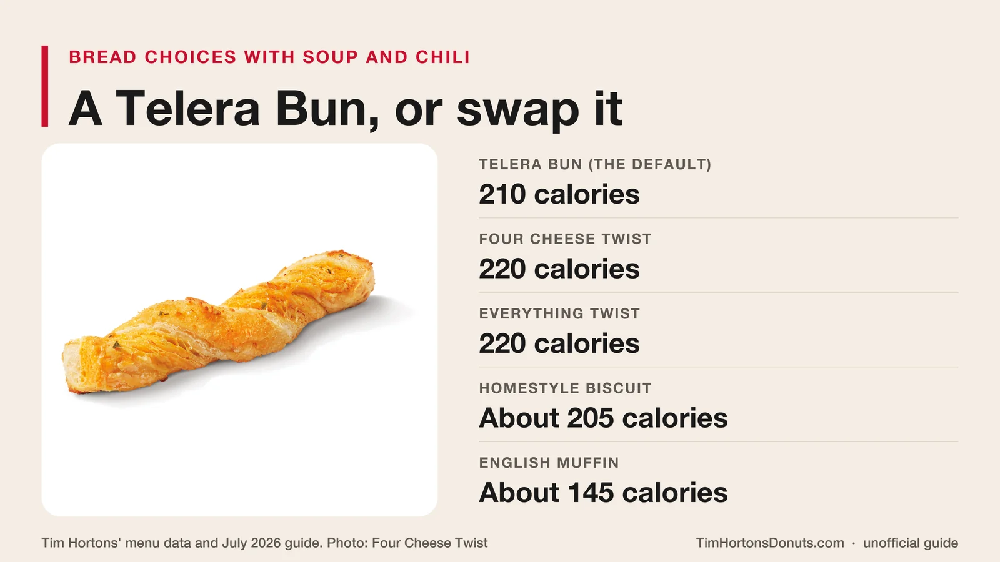

Unofficial fan guide - not affiliated with Tim Hortons
Chicken Noodle Soup and Chili are on the menu now, with five more soups in the nutrition guide. Here are the calories, sodium, prices, bun options and allergens.
Full Menu / Blog / Tim Hortons Soup and Chili

Tim Hortons sells Chicken Noodle Soup and Chili, each served with a bun. Its online menu lists the soup at 160 calories and the chili at 300. Its nutrition guide also covers Cream of Broccoli, Garden Minestrone, Tomato Parmesan, Potato Bacon and Clam Chowder, which vary by restaurant. Menu trackers list soup from about $3.49.
Soup and chili sit under Lunch & Dinner on the Tim Hortons menu in Canada. This page covers what is on the menu in October 2026, the calories and sodium for every soup in Tim Hortons' nutrition guide, what the chili is made of, prices, bun options, allergens and where the canned versions are sold.
Tim Hortons' online menu lists two items in its Soup & Chili section: Chicken Noodle Soup and Chili. We checked it on October 9, 2026.
The menu data labels each one as a single 14 oz serving. Older listings, and the nutrition guide, split soup and chili into regular and large.
Tim Hortons' July 2026 nutrition guide covers five more soups: Cream of Broccoli, Garden Minestrone, Tomato Parmesan, Potato Bacon and Clam Chowder. None of them was in the online menu section we checked. The guide itself says some items vary from restaurant to restaurant, so ask at the counter or check the app before you make a trip for one.

Spicy Thai Soup was in the August 2025 guide and is gone from the July 2026 one. Our lunch menu page covers the wraps, bowls and flatbread pizzas sold alongside it.
Tim Hortons Chili is a beef and bean chili. The official menu description lists ground beef, kidney beans, mushrooms and mixed vegetables in a tomato-based stew.

It is the most filling item in the section. In the July 2026 nutrition guide, a regular Chili has 310 calories and 19 g of protein, and a large has 430 calories and 27 g. The single serving on the online menu shows 300 calories and 21 g of protein. That 19 g is close to the 20 g in a medium Tim Hortons Protein Latte.
The July 2026 allergen guide lists it as Beef Chili and marks one allergen: soy. Wheat, milk and egg are not marked. It is not vegetarian. Our is Tim Hortons halal page explains that the chain's beef does not come from halal-certified suppliers.
Tim Hortons soups have 100 to 220 calories in a regular and 140 to 310 in a large. Chili has 310 calories in a regular and 430 in a large. Cream of Broccoli and Garden Minestrone are the lightest, at 100 calories for a regular.
| Item | Regular | Large | Protein (regular) | Fibre (regular) |
|---|---|---|---|---|
| Cream of Broccoli Soup | 100 | 150 | 5 g | 2 g |
| Garden Minestrone Soup | 100 | 140 | 5 g | 6 g |
| Chicken Noodle Soup | 140 | 190 | 9 g | 1 g |
| Tomato Parmesan Soup | 150 | 210 | 5 g | 3 g |
| Clam Chowder | 150 | 210 | 7 g | 1 g |
| Potato Bacon Soup | 220 | 310 | 6 g | 2 g |
| Chili | 310 | 430 | 19 g | 4 g |
These figures come from Tim Hortons' July 2026 nutrition guide. The guide lists the Soup Bun separately at 210 calories and 6 g of protein. A regular Chicken Noodle Soup with a bun is 350 calories, and a regular Chili with a bun is 520.

The online menu and the nutrition guide do not match right now. The menu shows one Chicken Noodle Soup at 160 calories and one Chili at 300, while the July 2026 guide still lists a regular and a large.
| Item | Source | Calories | Protein | Sodium |
|---|---|---|---|---|
| Chicken Noodle Soup | Online menu | 160 | 10 g | 840 mg |
| Chicken Noodle Soup | Guide, regular | 140 | 9 g | 710 mg |
| Chicken Noodle Soup | Guide, large | 190 | 10 g | 960 mg |
| Chili | Online menu | 300 | 21 g | 1,360 mg |
| Chili | Guide, regular | 310 | 19 g | 910 mg |
| Chili | Guide, large | 430 | 27 g | 1,270 mg |
The online records were updated on September 23 and 30, 2026, after the guide was published, so they look like the newer numbers. We could not find a Tim Hortons announcement of a recipe or size change. Our reading of the menu data is that the online figures cover the soup or chili itself and the bread is counted on top. Until the guide catches up, go by the figure the app shows for your order.
Every Tim Hortons soup has at least 590 mg of sodium in a regular, and Chili has 910 mg. Health Canada's daily value for sodium is 2,300 mg.
| Item (regular) | Sodium | Share of daily value |
|---|---|---|
| Garden Minestrone Soup | 590 mg | 26% |
| Cream of Broccoli Soup | 650 mg | 28% |
| Chicken Noodle Soup | 710 mg | 31% |
| Tomato Parmesan Soup | 740 mg | 32% |
| Clam Chowder | 750 mg | 33% |
| Potato Bacon Soup | 820 mg | 36% |
| Chili | 910 mg | 40% |

The percentages are our own calculation. A large Chili has 1,270 mg, which is 55% of the daily value, and the Chili on the online menu shows 1,360 mg, or 59%. A Soup Bun adds 400 mg. Our Tim Hortons nutrition facts page compares sodium across the whole menu, and Tim Hortons calories lists every item by size.
Expect to pay roughly $3.50 to $4.50 for a regular soup and $4.30 to $6 for a regular chili, before tax. We could not find a published menu-board price, and the two third-party trackers we checked on October 9, 2026, disagree.
| Item | Tracker 1 | Tracker 2 |
|---|---|---|
| Chicken Noodle Soup, regular | $3.49 | $4.49 |
| Chicken Noodle Soup, large | $4.49 | $5.79 |
| Chili, regular | $4.29 | $5.99 |
| Chili, large | $5.29 | Not listed |
Tim Hortons does not publish a national price list, and prices vary by restaurant and province. Open the Tim Hortons app, pick your restaurant and read the price there before you order.
Either way, soup is one of the cheaper hot items at lunch. A Classic Chicken Wrap is $6.49 on our wraps menu page, and a Steak and Cheddar Artisan Sandwich is $7.29.
Yes. Tim Hortons' menu shows a bread choice with every soup and chili, and the default is a Telera Bun. The menu data lists these options:
The July 2026 nutrition guide lists a Soup Bun at 210 calories, 37 g of carbohydrates and 400 mg of sodium. The Telera Bun's figures in the menu data are almost identical, so it appears to be the same bun. A Four Cheese Savoury Twist has 220 calories in the guide. In the menu data, the Everything Twist also has 220 calories, the Homestyle Biscuit about 205 and the English Muffin about 145.

Milk is the most common allergen in Tim Hortons soups: six of the seven items contain it. The table shows what Tim Hortons' July 2026 allergen guide marks for each one.
| Item | Contains | May contain |
|---|---|---|
| Chicken Noodle Soup | Wheat and gluten, milk, egg | Soy |
| Cream of Broccoli Soup | Milk, soy, mustard | None marked |
| Garden Minestrone Soup | Wheat and gluten, milk, egg | None marked |
| Tomato Parmesan Soup | Milk | None marked |
| Potato Bacon Chowder | Milk | None marked |
| Clam Chowder | Wheat and gluten, milk, fish and shellfish | None marked |
| Beef Chili | Soy | None marked |
| Soup Bun | Wheat and gluten | Milk, egg, soy, tree nuts, sesame |
The allergen guide uses the names Potato Bacon Chowder and Beef Chili. "None marked" is not a guarantee. The guide warns that shared equipment and preparation areas mean cross-contact cannot be ruled out. The bun contains wheat, so ask for no bread if you avoid it. Our Tim Hortons ingredients page explains how to check an item before you order.
Pick by what matters most to you. This checklist uses the regular size from the July 2026 guide.
Yes. Tim Hortons has sold canned soup in grocery stores since 2019. blogTO reported in October 2019 that the cans had reached Toronto supermarkets, including Sobeys and FreshCo, in chicken noodle, chicken and rice, cream of broccoli and chili.
Soup came in 540 mL cans at $3.29 and chili in a 398 mL can at $3.79 at the time. Canned soup is a separate retail product with its own nutrition label, so the restaurant figures on this page do not apply to it. Our Tim Hortons coffee beans page covers the other Tim Hortons products sold in stores.
Tim Hortons no longer serves soup or chili in a bread bowl. Bread bowls lost Tim Hortons' "Bring It Back" vote in 2014 and disappeared some time after that. Tim Hortons never announced an end date.
They were oven-baked bread bowls filled with soup or chili. Our discontinued items page has the history, including the 2001 combo that paired one with a coffee and a donut for $5.49.
Yes. Tim Hortons lists Chicken Noodle Soup on its online menu in Canada, and its July 2026 nutrition guide covers five more soups that vary by restaurant. Each soup is served with a bun.
Yes. Chili is on the Tim Hortons online menu in Canada, in the Soup & Chili section. It is a beef and kidney bean chili in a tomato-based stew, served with a bun.
A regular Tim Hortons Chili has 310 calories and a large has 430, according to the July 2026 nutrition guide. The single Chili on the online menu shows 300 calories. A Soup Bun adds 210.
No Tim Hortons soup is sold as gluten-free. Wheat is not marked for Cream of Broccoli, Tomato Parmesan, Potato Bacon or Chili in the July 2026 allergen guide, but the guide warns that cross-contact is possible. Chicken Noodle, Garden Minestrone, Clam Chowder and the bun all contain wheat.
Tim Hortons lists soup and chili under Lunch & Dinner and does not publish set hours for them. Availability depends on the restaurant, so check the app or see our Tim Hortons hours page before you go.
It depends on what you count. A regular Chili has the most protein at 19 g and 4 g of fibre, but also the most calories at 310 and the most sodium at 910 mg. A regular Garden Minestrone has 100 calories, 6 g of fibre and 590 mg of sodium.
Yes. Tim Hortons describes its chili as ground beef, kidney beans, mushrooms and a medley of vegetables in a tomato-based stew.
Tim Hortons' guides do not label any soup as vegetarian. Garden Minestrone, Cream of Broccoli and Tomato Parmesan have no meat in their names, but Tim Hortons does not publish what the broth is made from, so ask before you order. Chili, Chicken Noodle, Potato Bacon and Clam Chowder contain meat or seafood.
A regular Tim Hortons Chili has 19 g of protein and a large has 27 g. The single Chili on the online menu shows 21 g. That makes chili the highest-protein item in the Soup & Chili section.
Cream of Broccoli Soup is in Tim Hortons' July 2026 nutrition guide, at 100 calories for a regular and 150 for a large. It was not in the online Soup & Chili section on October 9, 2026, so it may not be at every restaurant.
Tim Hortons' nutrition guide lists soup and chili in regular and large. The online menu data now labels Chicken Noodle Soup and Chili as a single 14 oz serving each.
By the numbers, Garden Minestrone is the lightest all-round choice: 100 calories, the most fibre and the least sodium. Chicken Noodle Soup has the most protein of the soups and is the one listed on the online menu.
This is an independent, unofficial guide. It is not affiliated with, endorsed by, or sponsored by Tim Hortons or Restaurant Brands International. Calories, sodium and allergens come from Tim Hortons' July 2026 nutrition and allergen guides and its online menu data as checked on October 9, 2026, and can change. Soup and chili prices are from third-party menu trackers (Canadian dollars, before tax) and vary by restaurant. The allergen table is a summary: read Tim Hortons' current allergen guide and tell the restaurant about any allergy before you order. This page is general information, not medical or dietary advice. See Sources.